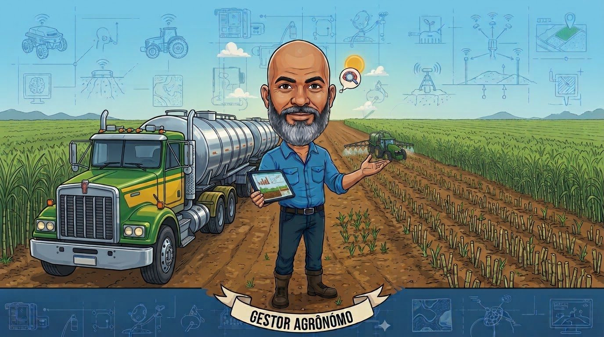
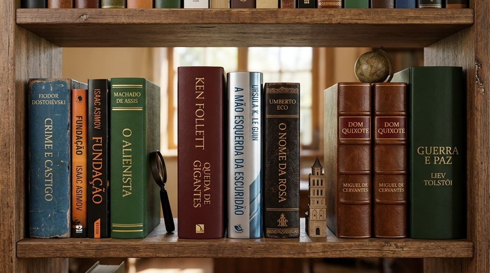
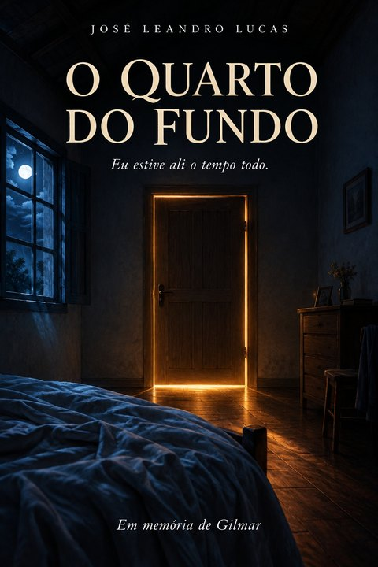
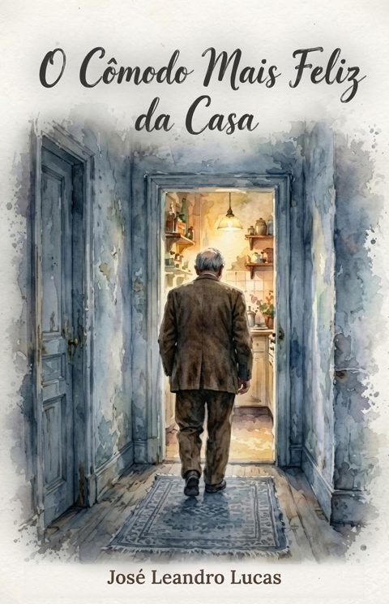

EPI EM DIA
Controle de entrega e estoque de EPIs da equipe, feito para os gestores acompanharem tudo pelo celular.
Abrir appAgro · Tecnologia · Brasil
Sou José Leandro, técnico agrícola e gestor da vinhaça localizada, que irriga e nutre a cana ao mesmo tempo. Crio aplicativos simples, que abrem num link e funcionam no celular, para resolver problemas reais do campo e de casa.

No ar
Cada app abre num link, sem cadastro, e pode ser instalado na tela inicial do celular. O EPI EM DIA abre na página Meus Apps, em versão de demonstração com dados fictícios.
Controle de entrega e estoque de EPIs da equipe, feito para os gestores acompanharem tudo pelo celular.
Abrir appMostra como macro e micronutrientes agem na planta e no solo: N, P, K, Ca, Mg, S e os micros.
Abrir appRacha a conta do churrasco, do bar ou da viagem e mostra quem deve quanto para quem.
Abrir appHábitos diários, pausas de respiração e um diário curto para cuidar da cabeça depois do turno.
Abrir appReceitas com o que tem na geladeira, cardápio da semana e lembretes de manutenção da casa.
Abrir appPerfil do solo
Todo app aqui cresce como a cana: começa pequeno, cria raiz e chega na colheita.
Tudo começa com um problema do dia a dia, no campo ou em casa: o controle de EPIs da equipe, a conta do churrasco, o cardápio da semana.
A ideia vira um app simples e gratuito, sem cadastro, pensado para quem não tem tempo a perder.
Um link para abrir e instalar no celular, pronto para chegar em quem precisa.
Sementes plantadas
Ideias que já estão no viveiro e vão virar app.
Quem planta
Sou técnico agrícola e gestor da vinhaça localizada na cana-de-açúcar: a gente irriga e, ao mesmo tempo, nutre a planta.
Comecei a criar apps para resolver o que eu via no campo e em casa. A regra é simples: tem que ser fácil, gratuito e abrir no celular de qualquer pessoa.
Hora da pausa
Fora do campo e dos apps, passo boas horas lendo. Estes são alguns dos livros da minha estante.

Nas horas vagas
Além de ler, gosto de escrever pequenas histórias. Algumas nasceram de lembranças; outras, de livros que me marcaram e que reescrevi do meu jeito.

Gilmar era o rapaz que todo mundo queria por perto: piada pronta, mão estendida, nenhuma tristeza no olhar. Depois de um acidente de carro, ele continua ouvindo e entendendo tudo, mas não consegue dizer mais nenhuma palavra. Um conto em primeira pessoa sobre o amor de quem fica e o que acontece com esse amor quando a esperança cansa.
Rafael largou a faculdade, vive num quarto apertado de pensão e não para de fazer uma conta: quanto vale a vida da agiota que arruína a cidade inteira? Quando a irmã aceita um casamento por dinheiro para salvá-lo, a conta parece fechar. Mas toda conta, um dia, é cobrada.

Único sobrevivente da queda de um avião na Amazônia, o repórter Caio acorda num laboratório debaixo da terra. Ali vive um povo escondido sob as árvores, para quem o estranho é ele. Entre a máquina de Jaci, que tenta decifrar sua voz, e o resgate que se aproxima, Caio descobre que alguns lugares mudam quem os encontra.

Todas as manhãs, o velho Emanuel veste o mesmo terno e os mesmos sapatos marrons, e caminha até a cozinha mais fria e desarrumada da casa. É ali que Sônia o espera junto ao fogão. Entre panelas esquecidas e uma brisa de inverno, ele encontra o calor que o resto da casa perdeu.
Porteira aberta
Quer um app, um link ou trocar uma ideia sobre o agro? Me chama.